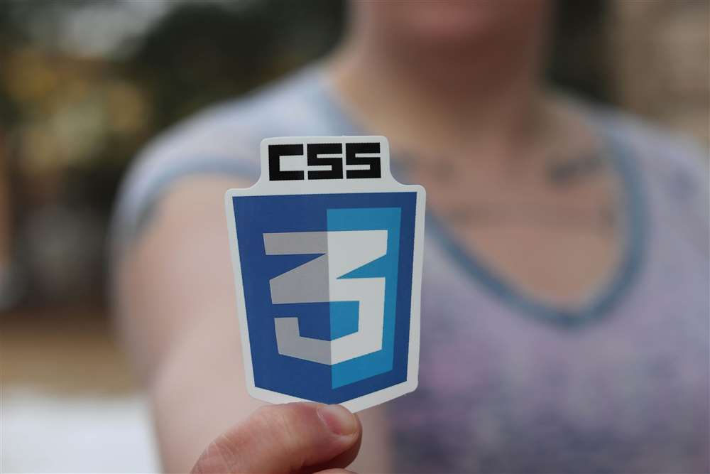

Responsable HTML
- Definición de la estructura de las páginas.
- Implementación de etiquetas semánticas (HTML5).
- Asegurar la accesibilidad y jerarquía de contenidos.
- Organización de la arquitectura de ficheros.
Equipos y Roles
Para simular un entorno profesional el trabajo se divide en tres roles clave. A continuación se detallan las tareas específicas de cada uno:
